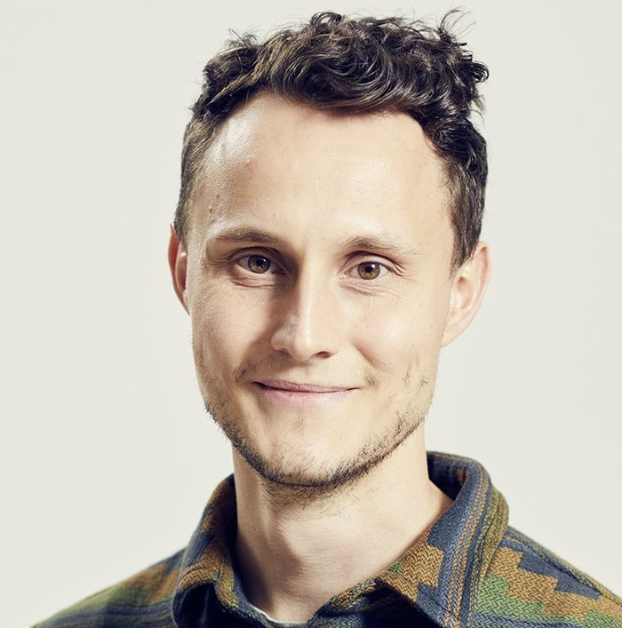

Studying how the human brain represents the visual world. Using large-scale neuroimaging, behavior, and AI.

My work focuses on visual cognition: how does the brain transform the complex signal entering our eyes into neural codes that reflect our subjective experience of the world and support every-day behavior?
To that end, I use large-scale neuroimaging methods and naturalistic designs to measure each brain intensively. I connect this large-scale brain activation to AI-driven computational models of vision and language to build comprehensive models of individual brains.
Another focus is reproducible, community-driven neuroscience: building, sharing, and maintaining open datasets that help drive discovery.
Distributed representations of behaviour-derived object dimensions in the human visual system
A comprehensive characterization of how the brain organizes our understanding of the objects we see.
THINGS-data: large-scale multimodal datasets for object representations in brain and behavior
Open datasets for studying object representations across brain (fMRI, MEG) and behavior.
Data as of May 2026 · Google Scholar